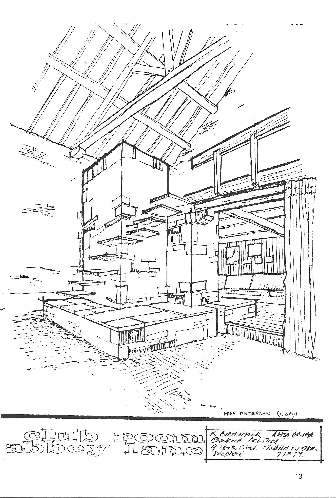
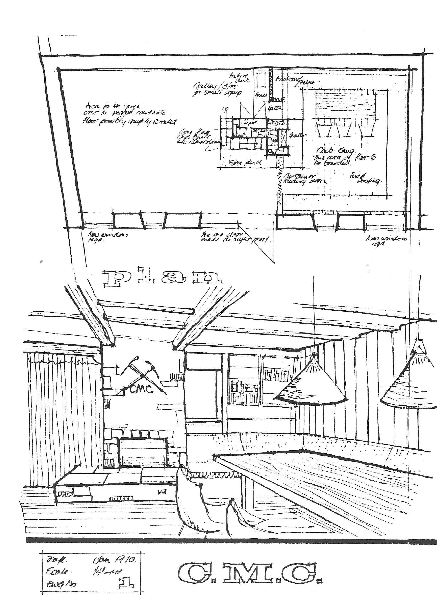
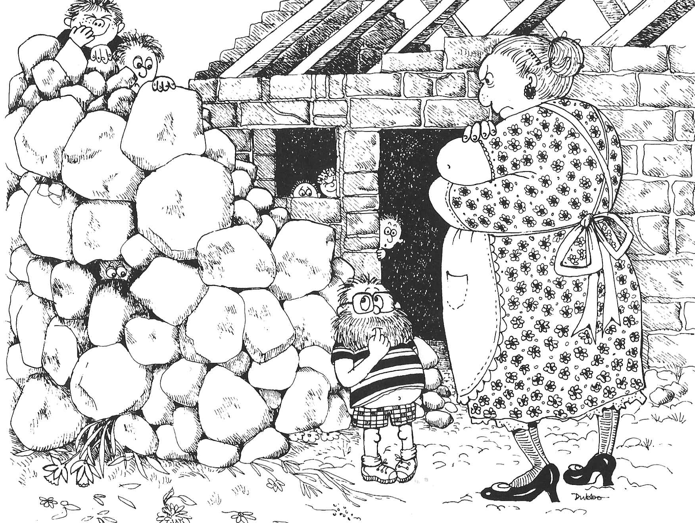

The Clubroom Project
\chapterauthor{by Mike Anderson}
It was in early July 1969, after two years of frustrating and fruitless searching for a suitable clubroom, that Alec and Colin were having lunch at The Rising Sun on Abbey Lane Sheffield. Whilst discussing the Club with the licensee Ada Bennett, they became aware of the dilapidated building behind the Inn.
On examining the beautiful old building with its ivy covered roof and fine stonework, it was immediately apparent that there was great potential here in terms of the long awaited clubroom. Interest was declared and Ada, although in favour of the proposition, made it clear that the final decision must rest with the Brewery and that they would need to get in touch with the Brewery Manager.
Fortunately, our friend Mike Collins was not only the Brewery Manager but also a "regular" at The Castle Inn where the Club was then still meeting. He immediately took up our cause and his enthusiasm for the project was boundless. In August 1969, Alec had talks at The Rising Sun with a local Director of the Brewery and members of his works department.
It was originally intended to occupy only the top half of the building which was formerly a corn and hay loft, but on closer inspection the upper floor joists and floor boards were found to be riddled with woodworm and would need to be entirely replaced: even the external doors were hanging off their hinges. After a quick inspection the parties were glad to retire to the more congenial surroundings of the bar of The Rising Sun to discuss the matter further.
Now Alec had always been a talkative type of person the less kind might call it verbal diarrhoea but on this occasion this characteristic proved an invaluable asset. Alec could not or would not stop talking, the Director needed to get back to work and in order to get away felt obliged to promise that the Brewery would strip out the whole of the interior of the building and make the property structurally sound. It was agreed by Ada that the Club could then rent the premises at a nominal figure. By the end of September 1969, the Brewery work had been completed and the building was available for our use.
It was at this crucial juncture that Alec presented himself at Mike Jackson's office and asked him if he would like to be Hon. Secretary. Mike said "No!" Alec, it appeared, had to move back to Scotland for business reasons and therefore unfortunately would not be able either to continue as Hon. Secretary or take part in the building of the clubroom. It has long been rumoured and believed by the very best of his friends that Alec had asked for a transfer back north because he had guessed what might be in store. He asked Mike again, praising his powers of organisation, his loyalty and the need for a steady hand on the tiller. Mike again said "No!" even more definitely. The verbal diarrhoea flowed and Mike just did not stand a chance. A new Hon. Secretary was in the making.
Our initial aspirations for the clubroom were limited to a casual use of the existing building, although we had vague hopes that we might be able to use one gable end as a makeshift climbing wall. We planned to utilise our camping equipment to provide heat and light and simply to install a few items of second hand furniture to be donated by the Brewery. During a visit to collect benches and stools, we noticed that the staff were taking up the old cobbled brewery courtyard which over the generations had been tarred in place to take the weight of horse drawn drays. This was an opportunity too good to miss and as the cobbles came up they were delivered to the yard of The Rising Sun. But the mass of filthy black stone grew to alarming proportions and it was painfully obvious that a good many generations of horses had passed over them and left their deposits in more ways than one.
Now the Club was fortunate in having an architect in its ranks in the form of Kerry Brooksbank and Kerry had kindly offered to give us a hand. On our very first day of work we gathered in the pub yard to be greeted by a huge pile of exceedingly evil smelling tar and horse encrusted cobbles. We were under the impression that all we were going to do was to clean them up as best we could and stack them into place. How could we have been so gullible?
Looking first at the cobbles and then at us, Kerry picked one up. It was shaped somewhat like a loaf of bread, rounded at the top and tapered on both sides. The wearing face had been slightly fractured by horseshoes and wagon wheels. He turned the stone over and to our surprise, struck it sharply with his hammer.
With a cry of "That's it!" he stood there grinning.
"That's what?" we responded in unison.
"We face it."
"We what?"
"We chisel a face on every stone."
"Every stone?"
"Every one!"
What was the man talking about? He must be joking or had he just taken leave of his senses? Face it? All of it? Just thinking about it almost made us walk off and leave him standing there. He couldn't mean it: sentenced to hard labour and rock breaking without trial. Our hobby was mountaineering, not serving time. He couldn't be serious… but he was. Every single stone was to be cut to reveal the beautiful lines and colours beneath the grime. All twenty tons of them.
Kerry immediately undertook to prepare detailed drawings for a stone built clubroom and then to supervise all the building work that would be entailed, essential if the enthusiasm of members without any building experience whatsoever was to result in a finished product worthy of themselves and the Club. Even then, little did we realise just what Kerry had in mind and the magnitude of the task we were about to undertake. It was not until he presented us with a line drawing that the full extent of his ambitions dawned on us.
His basic plan was to convert half the ground floor of the building into a "snug" with a room above in which to store Club equipment. His scheme called for a raised floor for the snug room and a massive stone centre column with embedded flagstone steps forming a staircase to the upper floor. The inside walls were to be stripped back to the original stonework and the ceiling of the snug was to be of new timber supported by two substantial beams, all the woodwork to be varnished to enhance its appearance. A fitted bookcase would not only house books, maps and climbing guides but also separate the snug from a small galley bench seating, carpets and spotlights would finish the project. , Having decided what to do, it only remained to do it, easier said than done. Where were the funds, materials and labour to come from? The last was easily solved as Club members would of necessity have to undertake the work themselves, but financing the project would be more difficult with the subscription only 1 a year. As for materials, we already had our building stone but a great deal more material would clearly be required and so the scrounging began.
A friendly builder gave us permission to "cannibalise" an old bungalow about to be demolished and one evening the equivalent of a plague of locusts descended on the unfortunate property. Under Kerry's direction, floors and quarry tiles came up, joists came out, many a mile of electric wire was gathered and the lead on the roof already being eyed by local citizens was stripped off. The entire booty was loaded in an assortment of vehicles and the convoy set off for home well after dark. Kerry brought back all the lead in a borrowed Land Rover, laden to the wheel arches. Dressed in his glad rags, covered in dust and without any form of identification, he could hardly be expected even to remember the registration number. It seemed to us a shame that he was not pulled up by the local Bobby. "You won't believe this, Officer …"
Over the coming months many members came to lend a hand, but the dedicated hard core were to be seen on site several evenings a week and most weekends. The major task involved cutting the stone, mixing cement and building the central column with its flagstone steps. The stone was so very hard that several blows were required to achieve even one cut on the face of each cobble but as we gradually grew more expert it became a joy to work with, such was its superb quality.
You could always tell our stone masons by the large painful bruises on their hands, the strained wrists and the blood stained finger bandages where the hammer had missed the chisel. To cover our embarrassment, we claimed that the injuries were hand jamming scars! We soon became adept at technical jargon and spoke knowingly but incomprehensibly of corbels, coigns, jumpers, gobbo, compo and lump hammers. Our world revolved around the four to one mix. Our shoes were disgusting, our finger nails were full of cement and our hair varied from grey to white to brown to grey as the dust and cement flew around. -
Throughout the building programme, every single bag of sand and cement had to be purchased and brought on site, water was obtained by the bucket from Ada's outhouse and lighting was by a single lamp. When it got too dark you went home. All cement had to be mixed by hand and all stones first cut to size and then laid to plan. After every building session, a return visit was required in order to brush out the mortar joints and create a marvellous three dimensional effect.
The hundred year old ivy, previously allowed to go its own way, covered the entire roof and gave us a different type of problem as it was growing through the stone roof tiles and hanging down on the inside from the ceiling to the floor. The ancient stems were so closely entwined that the mass of vegetation had to be laboriously cut out in small pieces, so as not to dislodge the tiles. This was very tough work indeed and two particularly intricate pieces were preserved in order to display them in the clubroom fireplace.
After a daily visit over a period of several weeks to a church under demolition, we salvaged several carved feature stones which were sand blasted and used to support the two main beams supplied by our friendly builder. The doors and all the window frames were taken out and replaced, the plumbing installed and the entire building rewired to modern standards.
Saturdays, Sundays, club nights and any spare time went into building work and slowly, very slowly, the project began to take shape and to resemble the plan. We felt that we were now becoming very professional and Kerry must have thought so too, for as the work progressed and then neared its completion, he kept coming up with another wall to be built or a corner to be faced with stone and even a decorative archway.
All in all it was a very busy time but like all things it thankfully came to an end. With the snug floor laid, the centre column built, the galley completed and the upper floor in place, all that remained was to provide the finishing touches. Kate Peek hand carved an archway stone dated 1970 whilst Bryan Metcalf created a copper Castle motif with crossed ice axes to decorate the snug fireplace. Tables, benches and chairs had been provided by the Brewery and the carpets, together with books, maps, pictures and photographs, were donated by members to make the clubroom all the more comfortable and welcoming. - The entire building programme in all its variety and complexity was carried out by our own enthusiastic and willing Club members, albeit under Kerry's expert guidance. The standard achieved with little or no previous experience in building no doubt surprised even the members themselves. Starting from Kerry's basic concept, the carrying out of the entire project has proved so successful that no substantial alterations have been required over the years and the clubroom today is as fine and as practical as ever.
However, at that time the mountaineering enthusiasts had not fully taken into account the doubts of a number of Castle Inn "regulars" who could not bring themselves to accept the move from their beloved watering hole. Even after an impassioned plea from Alec in Scotland, the move was sanctioned by the committee only on the casting vote of the President, a remarkable performance in the light of the magnitude of the task already undertaken and completed.
We were now committed irrevocably to the future of the Club and its new clubroom which we intended to use as a springboard for our outdoor activities. But could it be viable without the support of those early members who had stayed at The Castle Inn? It was a question we were to ask ourselves many times over, as on our first club night at the clubroom, a grand total of eight turned up. Thankfully, the enthusiasm of the loyal climbing and hill walking members prevailed and as the advantages of having our own clubroom and meeting place became more and more apparent, so the membership again began to grow with a welcome influx of keen climbers and hill walkers. On 21st April 1971 a grand opening party was held when Sir Jack Longland officially opened the clubroom and paid tribute to the hard work and achievement of the members.
By now we were all not only climbing and walking the hills at every opportunity but also starting families, building careers and setting up businesses. Nevertheless, after only a year the stalwarts began to get itchy fingers and to prepare plans for the erection of a climbing wall on the inside of the empty gable end a climbing wall to give members an opportunity to fill those dark winter nights. We learned that two cottages were being demolished and after negotiating for the stone, we organized a number of lorries and a further twenty tons of large sandstone blocks were loaded and delivered to the clubroom in one day.
WE WERE OFF AGAIN!
It was a peaceful Sunday morning when the first lorry arrived to be unloaded by members. At first the stone was neatly stacked, but the sheer volume soon overcame our efforts. The pile grew higher and higher until it topped the boundary wall, itself seven feet high, by some three feet. But the fully laden lorries kept arriving.
At the height of this activity, Ada who had in fairness to the Hon. Secretary had been warned that "a few stones" might be arriving sallied forth to express her heartfelt indignation. As she came into the yard, a very large lorry was noisily attempting to extricate itself from the huge mass of stone in front and the ever growing pile it was tipping behind. The din and the clouds of diesel fumes were absolutely appalling. The Hon. Secretary remember, he's the one who got talked into this job looked round for moral support from the loyal members busily working at his side. He needn't have bothered: not one was to be seen and Ada's considerable wrath descended on him unabated and at great length. Mike is not very often lost for words but it would have been easier for him to dam the Grand Canyon than to put up any resistance. He listened, tried to look intelligent and said very little, a ploy he had already tried out unsuccessfully on Alec. Guilty as charged!
The stone masons were brought out of their happy retirement and the building work began again. The climbing wall progressed quickly, as it proved much easier working indoors with power and water laid on. Great attention was given to detail, with undercut holds, hand jamming cracks and overhangs constructed to the precise requirements of the climbers. The design incorporated an open fireplace with a flue inside the wall, mischievously described as the one and only centrally heated climbing wall! The fireplace itself also serves to provide a genuine mantle shelf start to the main face.
One last area remaining for improvement was the main entrance. A canopy was built, stone flags laid and a stone grinding wheel erected to provide a decorative finishing touch with local interest, this being of course The Peak District , National Park emblem. Kate, as artistic as ever, carved out a second stone, this time dated 1972.
APRIL 26TH 1972 FINISHED!
No more stone to cut, no more fittings to fit, no more mixing of cement and no more painting. Party time with a firkin of ale, a whole range of goodies made by wives and girlfriends, a time to celebrate. Sir Jack Longland came back to do the honours and we were joined in our celebrations by representatives of the Brewery, members of other climbing clubs, the Press and all who had made our clubroom possible. The night was long and one to remember.
Since then, members have been involved in the promotion of a film in Sheffield depicting the local climbing scene and the premiere of "Whillans on Everest" in 1971, a scoop for the Club and, even if something of a gamble, a means of meeting our building costs. They have taken an active part in the formation of the Sheffield Association of Climbing Clubs SACC and have extended a helping hand to many, including the hard lads from London's East End who met their match on the local gritstone Edges. Most of all it has been fun and our clubroom provides unique and welcoming surroundings in which the members and their friends can enjoy each other's company and plan their outdoor activities.
Throughout the years, the Club has certainly seen many changes in climbing techniques, from the early days when we filed the threads out of nuts, to the high tech "Friends" of today. It is not unusual these days to see a pair of bright pink tights on the climbing wall on a club night, enhancing the style of their proud owner. Progress, it would appear, comes in many forms. Even the Club's newsletter is computerised: now there's progress!
Members can be found visiting all parts of the world ranging from the Himalaya to the Antarctic, from South America to Africa and from the Rockies to the Alps a far cry from those early days when each away meet was an adventure in itself and a meet in Scotland the limit of our ambitions. With Alec starting a second Castle Mountaineering Club in Edinburgh yes, he's at it again! it only remains for Kerry who moved to Johannesburg and for Kate and Alan who moved to Norway to do the same and we shall truly enjoy worldwide connections. , Throughout the first twenty one years of its existence the Castle has enjoyed the services of outstanding Club Officers who have taken a full and active part in organising meets and encouraging members new and old, ensuring the smooth running and progress of the Club. The friendship and companionship of The Castle Mountaineering Club are very special and just as members have given their best efforts to the Club, so the Club has brought together many people from different walks of life to share the joys of climbing the crags and tackling the mountains.
The foundations of The Castle Mountaineering Club have been well laid and with its unique features and the enthusiasm of its members, its future is clearly secure.

Figure 1: The Clubroom and Climbing Wall.

Figure 2: The Clubroom.

Figure 3: Renovating the Clubroom.